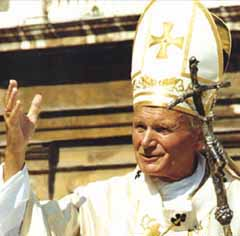
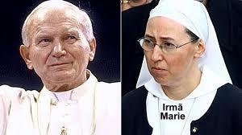

"BEATIFICAÇÃO"
O Papa João
Paulo II foi “beatificado” no Vaticano, numa Santa Missa celebrada diante da
Basílica de São Pedro, 
Mais de um milhão de pessoas acompanharam a cerimônia, pessoalmente ou através da transmissão televisiva.
Foi escolhido o milagre ocorrido com a religiosa francesa Irmã Marie Simon-Pierre Normand, do Instituto das Pequenas Irmãs das Maternidades Católicas (Institut des Petites Soeurs des Maternités Catholiques) que trabalhava num Hospital, na pequena cidade Aix-en-Provence, no sul da França, que lhe foi diagnosticado o mal de Parkinson. Ela não abandonou o trabalho, apesar dos incômodos da doença, manteve-se em seu posto e nas suas funções, estimulada pela força e vigor que lhe transmitia o Papa João Paulo II, com a mesma enfermidade.
Com a morte de Karol Wojtyla no dia 2 de Abril de 2005, um abismo de dúvidas se abriu diante de suas expectativas, deixando-a oprimida e inconsolável. E assim vivia cada vez mais envolvida pelo Parkinson, que é uma doença degenerativa, a qual seguidamente ia minando as suas forças e energia, impedindo-a de andar e de escrever corretamente.
Esta realidade levou as demais Irmãs da Congregação, a buscar um meio efetivo de ajudá-la a superar as dificuldades que atravessava, a fim de que ela pudesse recuperar a confiança e tranquilidade no cotidiano, continuando o seu caminho existencial, apesar da terrível enfermidade. A partir do dia 14 de Maio fizeram uma grande e fervorosa corrente de orações, suplicando a intercessão do Papa João Paulo II junto a DEUS, a fim de conseguir do SENHOR a graça da cura de Irmã Marie.
No dia 2 de Junho de 2005, apesar das intensas orações, ela se sentia num auge de depressão, derrotada pelo progresso da doença, cansada e oprimida pela dor, estava inconsolável. Então, pediu a sua Superiora que lhe dispensasse do trabalho no Hospital. Todavia, a Irmã Superiora, depois de estimular vigorosamente os seus sentimentos, com palavras de muito amor e fé na Providência Divina, não a liberou do serviço e aconselhou que ela renovasse com insistência e confiança, o seu pedido ao Papa João Paulo II, suplicando a intercessão dele junto a DEUS em seu benefício, objetivando alcançar a graça de sua cura, pela Misericórdia Divina.
Triste, mas com uma grande esperança no coração, foi para a Capela do Hospital e rezou durante longo tempo, enquanto sua face ficava inundada por caudalosas lágrimas, que sacramentavam a sua fervorosa súplica. Terminado o trabalho, foi para sua cela, rezou as últimas orações e dormiu. Teve uma noite tranquila, o seu espírito estava calmo e sua mente descansava no SENHOR.
Ao despertar pela manhã, sentiu que o seu organismo estava diferente e olhando a si mesma, percebeu que suas mãos não tremiam mais e tinha firmeza ao ficar de pé! Uma imensa alegria brotou de seu coração e de maneira irrefreável se lançou fora da cela para encontrar e expandir a sua indizível felicidade com as outras Irmãs! Irmã Marie Simon estava completamente curada, o milagre aconteceu de fato! Estava totalmente curada exatamente dois meses após o falecimento do Papa Karol Wojtyla, e ela, assim como todas as Irmãs da Congregação, atribuem o milagre da cura feito por DEUS, graças à eficaz e atenciosa intercessão do Papa.

De acordo com as regras do Vaticano, uma cura inexplicável em termos médicos deve ser instantânea, completa e duradoura. Exatamente como aconteceu com a Irmã Marie. Por essa razão, o sacerdote polonês Slawomir Oder, que é o Postulador da Causa de Canonização do Papa, escolheu para a “beatificação”, o mencionado milagre. E por isso, a Comissão Médica da Congregação para a Causa dos Santos estudou e avaliou exaustivamente os atos da investigação canônica, assim como o laudo dos legistas. Eles examinaram uma quantidade apreciável de documentos com depoimentos das Irmãs da Congregação, de médicos e funcionários que trabalhavam no Hospital, de pessoas diversas que conheceram a Irmã Marie, e receitas médicas, dos medicamentos ingeridos pela Irmã, durante o tratamento do Parkinson.
É importante acrescentar, que tanto o Padre Postulador, como os médicos legistas, examinando os documentos que comprovam o milagre, como por exemplo, diversos fragmentos da caligrafia da religiosa , ficaram admirados com os textos escritos por ela antes e depois da cura, porque aconteceu uma mudança verdadeiramente impressionante.
Em 21 de Outubro de 2010, os peritos da Comissão Médica, após estudarem toda a documentação expressaram-se favoravelmente a inexplicabilidade científica da cura. Em 14 de Dezembro de 2010, os consultores Teólogos também se manifestaram de acordo. Em 11 de Janeiro de 2011, a Sessão Ordinária dos Cardeais e Bispos da Congregação emitiram unanimente uma sentença afirmativa sobre a cura definitiva da Irmã Marie Simon-Pierre Normand, como realizada por DEUS, após a intercessão do Papa João Paulo II invocada pela curada e muitos fiéis.
Dom Ângelo Amato, Cardeal Prefeito da Congregação das Causas dos Santos, confirmou que Sua Santidade, o Papa Bento XVI acolheu todas as provas e estando de perfeito acordo, aprovou a publicação do decreto que comprova o milagre atribuído à intercessão de João Paulo II, concluindo assim o processo para a sua “beatificação”, no dia 14 de Janeiro de 2011.
Para a festa e homenagens ao “Beato Karol Wojtyla”, foi escolhido o dia 22 de Outubro, que foi a data em que o Papa João Paulo II celebrou a primeira Santa Missa do seu Pontificado.
"ORAÇÃO"
Para pedir favores pela intercessão do servo de DEUS, o Papa João Paulo II, rezar durante nove (9) dias seguidos:
Ó TRINDADE SANTA,
Nós VOS agradecemos por ter dado à Igreja o Papa João Paulo II e por ter feito resplandecer nele a ternura da VOSSA Paternidade, a glória da Cruz de CRISTO e o esplendor do ESPÍRITO DE AMOR.
Confiado totalmente na VOSSA infinita misericórdia e na materna intercessão de MARIA, ele foi para nós uma imagem viva de JESUS Bom Pastor, indicando-nos a santidade como a mais alta medida da vida cristã ordinária, que é o caminho para alcançarmos a comunhão eterna Convosco.
Segundo a VOSSA vontade, concedei-nos, por sua intercessão, a graça que imploramos, (fazer o pedido da graça desejada…) na esperança de que ele seja logo inscrito no número dos VOSSOS Santos. Amém.
Rezar Três PAI NOSSO + Três AVE MARIA + Três GLORIA.